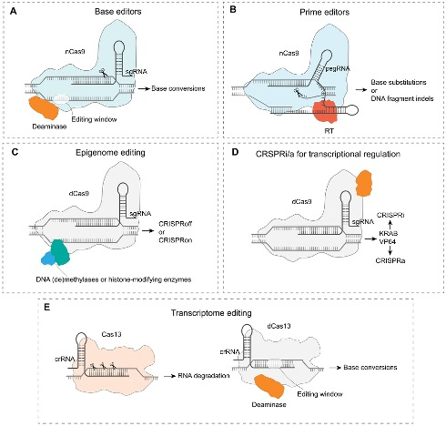
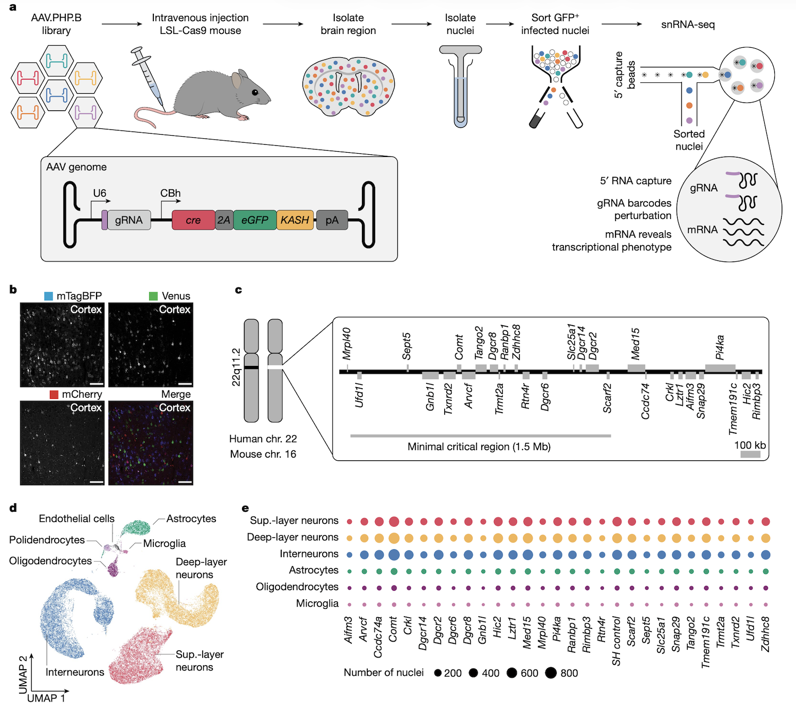

BSMS205 · Genetics
Reverse Genetics
Chapter 26 · Part V · Functional Genetics
Welcome to Chapter twenty-six, Reverse Genetics, From Gene to Function. In the previous chapter we used G W A S and burden tests to identify candidate disease genes. Today we turn those candidates into mechanistic understanding. Reverse genetics is the experimental engine that converts statistical signals into biological causation.
From the previous chapter
SCN2A is enriched for LoFNow what?
You finished a burden test. The gene S C N two A is enriched for loss-of-function variants in epilepsy cases. The statistics are convincing. You are confident this gene matters. But — what does S C N two A actually do in neurons? What happens when you lose it? Can you fix the problem by restoring its function? Statistical association cannot answer those questions. Only experimentation can. That is the job of reverse genetics.
The logic
Pick a gene
Change it — remove · activate · editObserve what happens
Establish causality , not just correlation
Reverse genetics is controlled experimentation on genes. The protocol is always the same. Pick a gene. Change it — remove it, activate it, edit it. Observe what happens. The goal is to establish that this gene actually causes the phenotype, not just correlates with it. In humans, where direct experiments are impossible for ethical reasons, the experiments happen in cell models, animal models, and computational models. But the conceptual logic is the same.
Where we do these experiments
Cell models — human iPSCs, patient cells, organoidsAnimal models — mice, zebrafish, primatesComputational predictions — when wet-lab is impossible
Three platforms host modern reverse genetics. Cell models, primarily induced pluripotent stem cells from patients, differentiated into neurons or other relevant cell types, plus three-dimensional brain organoids. Animal models, especially mice and zebrafish for in vivo work, occasionally non-human primates. And computational predictions, when wet-lab experiments are not feasible. Each platform has trade-offs in cost, speed, and physiological relevance, and the modern field uses all three in combination.
Roadmap for today
Classic perturbations · loss vs gain of function
The CRISPR revolution · one platform, many tools
High-throughput screens · genome-scale reverse genetics
Functional rescue · proving causality
Putting it all together · the CHD8 case study
Here is how today flows. First, the classic perturbation strategies — knock-out and overexpression — that form the conceptual foundation. Second, the CRISPR revolution that unified the field. Third, high-throughput screens that scale reverse genetics to whole genomes. Fourth, the rescue experiment, the gold standard for proving causality. And fifth, the C H D eight case study showing how all the pieces fit together. Let's begin.
§ 1
Classic Perturbations
Long before CRISPR, geneticists had powerful ways to perturb genes. Let's review the classic strategies.
Loss of function · what breaks?
Knock-out — completely eliminate the geneKnock-down — reduce expression with RNAiIf lethal → essential gene
If specific defect → reveals the gene's normal function
The simplest reverse-genetic experiment is loss of function. Knock-out completely eliminates the gene, by deletion or by introducing a premature stop codon. Knock-down reduces, but does not eliminate, expression — typically by R N A interference. R N A interference uses small R N A molecules to bind and degrade the target m R N A, reducing protein output. If knocking out a gene causes lethality, you learn it is essential. If it causes a specific defect — like neurons failing to fire action potentials — you learn what the gene normally does.
Gain of function · what's enough?
Overexpression — drive the gene from a strong promoterEctopic expression — turn it on where it's normally silentTests sufficiency · can this gene alone produce the outcome?
The flip side is gain of function. Overexpression cranks up gene activity by placing the gene under a strong promoter that forces high m R N A and protein levels. Ectopic expression activates the gene in tissues or developmental stages where it is normally silent. Both approaches test the question of sufficiency. Can this gene, by itself, produce a particular outcome? For example, expressing a neural transcription factor in skin cells can sometimes reprogram them into neurons, showing that this single factor is sufficient for neural identity.
Conditional and inducible systems
Tet-on / Tet-off — drug-controlled timingCRE-lox — tissue-specific deletion in miceAvoids embryonic lethality from constitutive knock-outs
For genes whose constitutive knock-out is embryonic lethal, you need conditional control. Two classic tools. Tet-on and tet-off systems use the antibiotic doxycycline to switch genes on or off — add the drug, the gene turns on or off depending on the variant. C R E recombinase paired with lox P sites enables tissue-specific deletion. You flank the target gene with lox P sites and drive C R E expression only in the tissue of interest, like cortex-specific neurons. The gene is deleted only there. These tools have been workhorses of mouse genetics for decades and are now combined with CRISPR for even greater precision.
§ 2
The CRISPR Revolution
CRISPR fundamentally changed the field. Let's see why.
One platform, many tools
A guide RNA + a Cas protein.
Knock-out · base edit · prime edit · activate · repress · target RNA
One programming model unifies the entire toolkit
The genius of CRISPR is its unified architecture. A single guide R N A targets the system to a specific D N A sequence. A Cas protein does the work. Different Cas variants do different things. The original Cas nine cuts. A catalytically dead version, called d Cas nine, just binds. Fused to other proteins, d Cas nine can activate or repress transcription, modify chromatin, or edit individual bases. Cas thirteen targets R N A instead of D N A. The brilliance is that the same programming concept — design a guide, deliver it with a Cas variant — works across all of these applications. The toolkit is huge, but conceptually unified.
The expanded CRISPR toolkit

From DNA cutting to base editing, prime editing, epigenome editing (CRISPRoff/CRISPRon), CRISPRi/CRISPRa, and Cas13 RNA targeting. Zhang et al. 2025, GPB · CC BY 4.0.
This figure summarises the modern CRISPR toolkit. Base editors fuse a deaminase enzyme to nicking Cas nine to convert specific bases without cutting both strands. Prime editors fuse a reverse transcriptase to enable precise insertions, deletions, and substitutions using a guide R N A template. Epigenome editors fuse methylases or histone-modifying enzymes to dead Cas nine to silence or activate genes without changing the D N A sequence. CRISPR i and CRISPR a use d Cas nine fused to repressors or activators to reversibly control transcription. And Cas thirteen targets R N A directly. Each of these is now a routine tool in modern genetics.
CRISPR knock-outs · cutting DNA
Cas9 cuts both strands at the guide RNA targetCell repairs the break · often makes mistakes
Frameshift in coding region → premature stop codon
Standard way to create human-cell knock-outs
The original CRISPR application is gene knock-out using Cas nine. The guide R N A directs Cas nine to a target sequence. Cas nine cuts both strands of the D N A. The cell tries to repair the break, but the non-homologous end-joining repair pathway is error-prone. It often inserts or deletes a few bases. If this happens in a coding region, it shifts the reading frame and creates a premature stop codon, which knocks out the gene. This is now the standard way to create knock-outs in human cells. You design a guide R N A targeting the gene, deliver it with Cas nine, and select the cells where the gene is fully inactivated.
Base editing · single-letter precision
Cytosine base editor (CBE) · C → TAdenine base editor (ABE) · A → GNo double-strand break · no random indels
Perfect for modeling specific patient mutations
Sometimes you do not want to destroy a gene. You want to introduce a specific patient mutation. Base editors are perfect for this. They fuse a deaminase enzyme to a modified Cas nine that nicks only one strand. Cytosine base editors convert C to T, by deaminating cytosine to uracil. Adenine base editors convert A to G. No double-strand break, no random indel collateral. If a patient has a C-to-T mutation in S C N two A, you can use a base editor to install that exact change in cultured neurons and study its effects. This makes base editing the cleanest way to model disease variants.
Prime editing · find and replace
Reverse transcriptase fused to nickase Cas9
Make any small insertion · deletion · substitution
Specify desired sequence on the guide RNA itself
More flexible than base editing · more complex
Prime editing goes one step further. It fuses a reverse transcriptase enzyme to a nickase Cas nine. The guide R N A carries both the target sequence and a template specifying the desired replacement sequence. Prime editing can introduce small insertions, deletions, or any base-to-base change. Think of it as a find-and-replace operation on the genome. It is more flexible than base editing but also more complex to implement, and the editing efficiency is currently lower. Prime editing is the most powerful precision-editing tool we have today, and it continues to improve.
CRISPRa and CRISPRi · regulation, not editing
CRISPRa
dCas9 + activator (e.g. VP64)
Guide to promoter → turn gene up
Targeted overexpression · no DNA change
CRISPRi
dCas9 + repressor (e.g. KRAB)
Guide to promoter → turn gene down
Reversible knock-down
Sometimes you do not want to edit the D N A at all. You just want to turn a gene up or down. Enter d Cas nine — a dead version of Cas nine that binds D N A but cannot cut. By itself it does little. Fused to other proteins, it becomes a programmable gene regulator. CRISPR a, for activation, uses d Cas nine fused to a transcriptional activator like V P sixty-four. Guide it to a gene's promoter and it recruits transcription machinery, turning the gene up. CRISPR i, for inhibition, uses d Cas nine fused to a repressor like K R A B. The complex sits on the promoter as a roadblock, blocking transcription. Both are reversible and tunable, with no permanent D N A change. They are the tools of choice for studying gene dosage and for many therapeutic applications.
Cas13 · targeting RNA
Cuts RNA instead of DNA
Knock down specific mRNAs without genome changes
Useful for splicing · localisation · stability studies
More programmable than RNAi
Most CRISPR variants work on D N A. Cas thirteen, however, targets R N A. It cuts m R N A transcripts in a sequence-specific way, knocking them down without touching the genome. This is similar in spirit to R N A interference but more programmable. Cas thirteen is especially useful for studying R N A biology — splicing, localisation, transcript stability — and for temporary gene silencing where permanent edits would be problematic. It is a newer addition to the CRISPR toolkit and its applications are still expanding.
§ 3
High-Throughput
So far we have talked about perturbing one gene at a time. But what if you want to test all twenty thousand genes at once? Welcome to high-throughput reverse genetics.
Pooled CRISPR screens
Library of ~70,000 guide RNAs covering every gene
Deliver to a million cells · one guide per cell
Apply selective pressure (drug, sorting)
Sequence which guides are enriched or depleted
→ Ranked list of genes that affect the phenotype.
A pooled CRISPR screen works as follows. You make a library of seventy thousand or so guide R N As, covering every gene in the genome at multiple guides per gene. You package them into a viral vector and infect a million cells, with the m o i adjusted so each cell gets exactly one guide. You then apply a selective pressure — for example, treat with a drug, or sort cells based on a marker. Cells in which the knocked-out gene is required for survival or for the marker drop out. You then sequence which guide R N As remain enriched and which are depleted. The result is a ranked list of every gene that affects your phenotype.
What pooled screens have found
Cancer essentiality · which genes do tumour cells need to survive?Drug resistance · which knockouts make cells sensitive?Viral host factors · which genes does a virus require?Differentiation · which genes drive cell-fate decisions?
Pooled screens are now routine, and they have produced major discoveries. They mapped the gene-essentiality landscape of cancer cell lines — which genes each tumour cell depends on. They found drug-resistance and drug-sensitivity genes, helping prioritise combination therapies. They identified host factors required for viral infection — including for S A R S coronavirus two during the C O V I D pandemic. And they revealed master regulators of cell-fate decisions during differentiation. Each of these would have taken decades with one-gene-at-a-time methods. Pooled screens compress them into months.
Perturb-seq · linking knockouts to transcriptomes
Pooled CRISPR + single-cell RNA-seq
Each cell: which gene was knocked out · how the transcriptome changed
Maps regulatory networks at scale
Now works in vivo via AAV delivery
Santinha et al. 2023, Nature
Pooled screens tell you which genes affect a phenotype, but not how. Perturb-seq fills that gap. It combines pooled CRISPR perturbations with single-cell R N A sequencing. For every cell you read out two things: which gene was knocked out, identified by the guide R N A barcode, and the cell's full transcriptome. Now, instead of just knowing that knocking out gene X kills cells, you can see which downstream genes change expression and infer the regulatory network. The Santinha twenty twenty-three paper extended Perturb-seq to in vivo work in the mouse brain using A A V delivery, opening up large-scale reverse-genetic screens in adult tissue.
Perturb-seq · in vivo workflow

AAV pooled gRNA library → mouse brain · single-nucleus RNA-seq → linked perturbation + transcriptome.Nature .
This is the in vivo Perturb-seq workflow. Pooled guide R N A library is packaged into A A V particles and injected systemically into a mouse expressing Cas nine in target cells. After several weeks, brain tissue is harvested and nuclei are isolated. Single-nucleus R N A-seq with a specialised five-prime capture method reads out both the cellular transcriptome and the guide R N A identity simultaneously. The result: a map of which genes were perturbed in which cells, and how the transcriptome changed. This is reverse genetics directly inside an intact brain.
MPRA · testing regulatory sequences
Most GWAS hits are non-coding · in regulatory elements
MPRA = Massively Parallel Reporter Assay
Test thousands of candidate enhancers in parallel
Each linked to a reporter (e.g. GFP) and a barcode
Agarwal et al. 2025, Nature
CRISPR screens focus on genes. But ninety-three percent of G W A S hits are in non-coding regulatory regions. To test regulatory sequences at scale, the field developed massively parallel reporter assays, abbreviated M P R A. The idea is simple. You synthesise a library of two hundred thirty nucleotide oligonucleotides, each containing a different candidate regulatory element. You clone them upstream of a reporter gene, with each element tagged by a unique barcode. After integration into cells, you sequence the transcribed barcodes versus the integrated barcodes — the ratio gives you the activity of each element. The Agarwal twenty twenty-five paper used this approach to characterise hundreds of thousands of candidate cis-regulatory elements, mapping the regulatory landscape of the human genome.
§ 4
Functional Rescue ·
Once you know losing a gene causes a phenotype, the gold standard is the rescue experiment.
Why rescue experiments are decisive
Restore the gene · does the phenotype go away?
If yes → the gene is causal , not just correlated
The cleanest possible test of causation
The rescue experiment is the cleanest test of causality. You know that knocking out a gene produces a phenotype. Now you put the gene back. If the phenotype goes away, you have proven that the gene is causal — not just statistically associated with the phenotype, but actually responsible for it. Rescue is the experimental gold standard, and three main strategies exist.
Three rescue strategies
Gene complementation — add back a wild-type copyGene correction — fix the mutation with base/prime editingAllelic activation — boost the remaining allele with CRISPRa
Three rescue strategies are routine. One. Gene complementation. Add back a normal copy of the gene to mutant cells. The added copy can be transient, like injected m R N A, or stable, integrated at a safe-harbour locus. Two. Gene correction. Use base editing or prime editing to repair the mutation in its native genomic context. This is the cleanest test because the corrected allele is under its own native regulatory control. Three. Allelic activation. For haploinsufficiency disorders, where one functional copy is not enough, use CRISPR a to boost expression of the remaining intact allele. We will see this strategy applied to S C N two A in the next chapter.
§ 5
Putting It Together ·
Let's trace one autism risk gene, C H D eight, through the full forward-and-reverse genetics workflow.
The CHD8 journey
Forward · burden test · LoF enriched in autism casesReverse · CRISPR knock-out → abnormal expression, synaptic defectsRescue · WT CHD8 added back → defects disappearMechanism · Perturb-seq → CHD8 regulates 100s of chromatin and neuronal genes
Step one. Forward genetics. Burden tests in autism cohorts identified C H D eight as enriched for loss-of-function variants. Step two. Reverse genetics. CRISPR knock-out of C H D eight in human induced pluripotent stem cell-derived neurons caused abnormal gene expression and synaptic defects. Step three. Rescue. Adding back a wild-type C H D eight allele restored normal function, proving causality. Step four. Mechanism. Perturb-seq showed that C H D eight regulates hundreds of downstream genes involved in chromatin remodelling and neuronal differentiation. We now understand C H D eight not just as a statistical signal, but as a chromatin regulator whose loss disrupts neuronal development. That is the full forward-to-reverse cycle.
What to take away
Reverse genetics: gene → phenotype by perturbation
CRISPR unified the toolkit · cut · base edit · prime edit · regulate · target RNA
Pooled screens scale to genome-wide perturbations
Perturb-seq adds the transcriptome readout
MPRA tests regulatory sequences
Rescue experiments prove causation
Six takeaways. One. Reverse genetics goes from gene to phenotype, by deliberate perturbation. Two. CRISPR unified the toolkit — cut with Cas nine, base-edit with deaminase fusions, prime-edit with reverse transcriptase fusions, regulate with d Cas nine, target R N A with Cas thirteen. Three. Pooled CRISPR screens scale reverse genetics to whole-genome perturbations. Four. Perturb-seq adds the single-cell transcriptome readout, mapping regulatory networks. Five. M P R A tests regulatory sequences in parallel. And six. Rescue experiments — complementation, correction, or allelic activation — close the loop and prove causation.
Next lecture
Reverse genetics meets the clinic ·CRISPRa for SCN2A
Chapter 27 · CRISPRa Therapy for SCN2A Haploinsufficiency
Next chapter we apply everything we have learned to a real therapeutic problem. S C N two A haploinsufficiency causes a severe developmental epilepsy. Reverse genetics — specifically CRISPR a-based allelic activation — is now in development as a therapy. We will follow that story in detail. See you then.